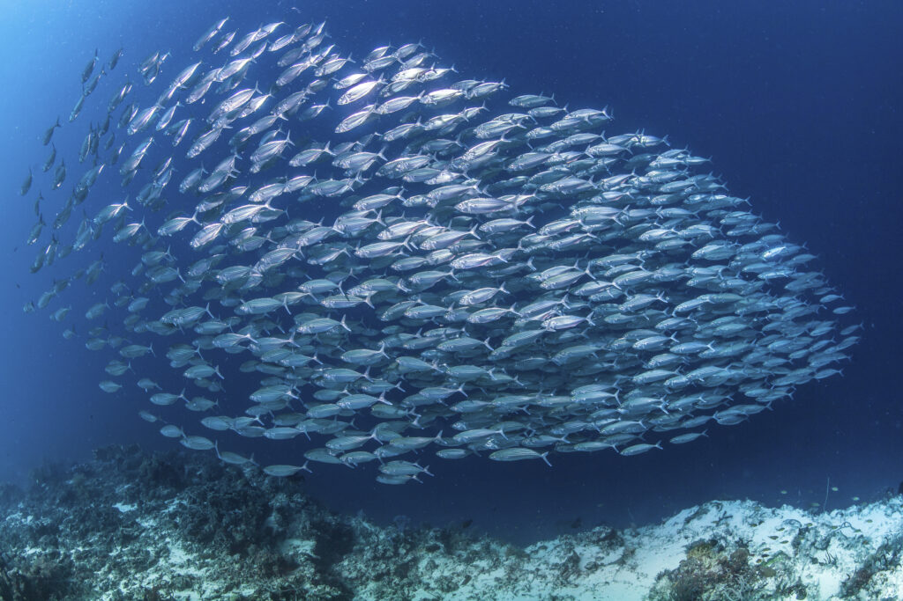
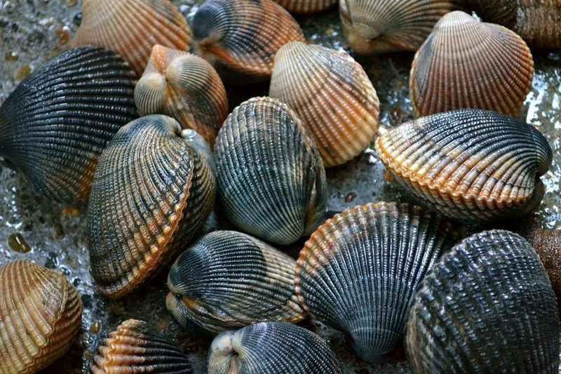
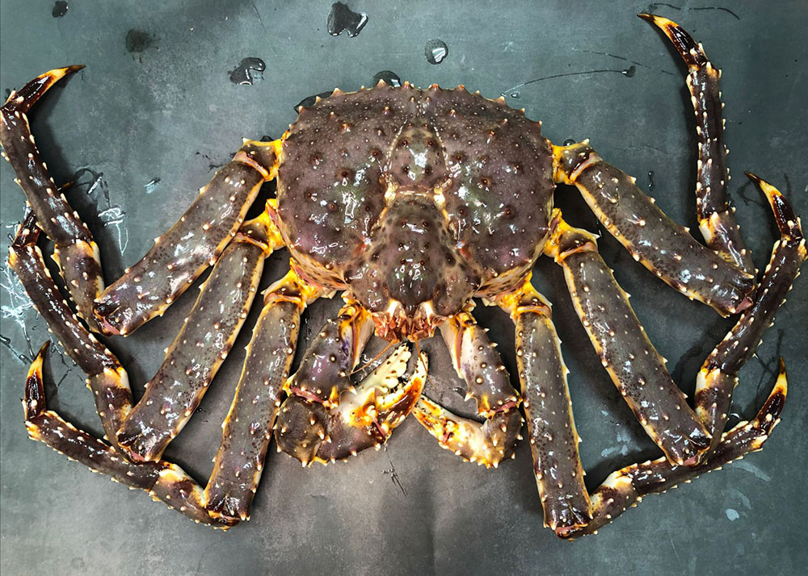
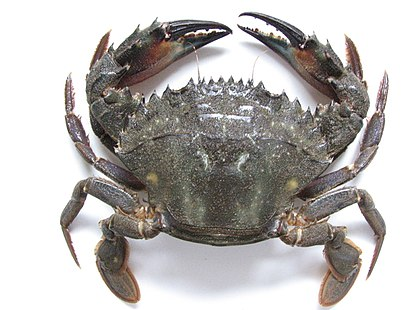

Животный мир водоёма можно поделить на три категории — зоопланктон, нектон и бентос. К первому типу относятся ракообразные и инфузории, которые не имеют сильных органов дыхания. В наибольшем количестве встречаются веслоногие ракообразные, особенно рачки калянусы, которые вырастают в длину не более двух миллиметров. В водоёме обитает много морских звёзд и ежей, червей, моллюсков. Здесь в изобилии встречаются каракатицы, осьминоги, кальмары, а также морские огурцы и трепанги. Среди объектов промышленной добычи можно отметить устриц и морских гребешков. Более крупные животные представлены ластоногими, в том числе такими представителями фауны:
Характерной особенностью Японского моря является малое количество глубоководных рыб. Эти представители ихтиофауны сильно отличаются от рыб Тихого океана на тех же глубинах, поскольку являются мелководными обитателями, приспособившимися к новым условиям жизни. Наиболее распространённые из них — липариды, северные бычки.
 
Земля - не шар. Земля - геоид! И знай, круша хитины лап, Камчатский краб - не краб! Крабоид!!! А вот стригун - реально краб!...
 